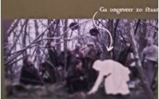

15. Tot slot
Dit was het einde van de tour offerschatten.
Hopelijk heb je ervan genoten!
Wat zou jij offeren als je in de Bronstijd zou hebben geleefd? En om welke reden?
Voor een leuke afsluiting van deze tour kun je een foto in het veenlandschap maken. Trek een pels aan (of ga in je eigen kleren) en ga ongeveer zo staan:

Wil je ons helpen het museum te verbeteren?
Vul dan alsjeblieft de korte vragenlijst in.
Dat kan door op de link hieronder te drukken.
Het kost maar een paar minuten.
Alvast heel erg bedankt voor je hulp.
En bedankt voor je bezoek aan de Museumfabriek!